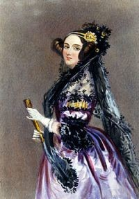
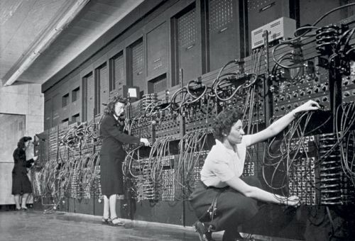
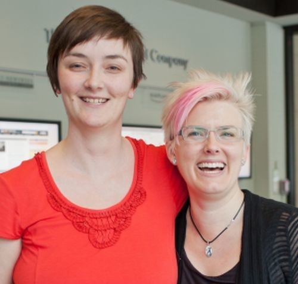

Yazılım Dünyasında Kadınlar
Herkes bilir ki iş dünyasında kadınlar hakkında " o yapamaz","bu iş kadınlara göre değil" hatta "kadınlar çalışmamalı" iddiaları çok güçlü yer etmiştir.Aslında kadınların erkeklerden "daha az zeki olduğu" iddiası beyinle ilgili ilk araştırmalar yapıldığında ortaya atılmıştır. Erkeklerin beyninin kadınların beyninden daha ağır olduğu görülmüştür. Bu tespitten yola çıkılarak da erkeklerin daha zeki olduğu öne sürülmüştür. Bundan dolayı yıllarca kadınların bilimsel araştırma yapamayacağı, bilim insanı olamayacağı ve hatta sadece ona verilen görevleri yerine getirmesi gerektiği düşünülmüştür.(Tabikii bunlar çok eski dönemlere ilk bilimsel araştırmaların yapıldığı döneme ait bilgiler) Bu akıllara kazınmış olan bilgi günümüzde hâlâ erkeklerin kadınlardan daha başarılı olduğu düşüncesini doğurmuştur.
Öyleki yazılım sektörüne baktığımız zaman gitHub repolarına kadınların gönderdiği kodların kabul edilme oranı daha yüksek.Ancak bu araştırma şöyle devam ediyor, şayet yazanın cinsiyeti belli ise kadınların kodlarının kabul edilme oranı düşüyor. Yazılan kodun değişmediğini göz önüne alırsak cinsiyet değişince hata oranının arttığı ve güvensizliğin arttığı görülür.
Aynı durumu yaşamış biri olarak hemcinslerimiz bile kodu yazan kişinin kadın olduğunu görünce daha çok sorguluyor. Demekki 21.yy da bile bu tabuyu yıkamıyoruz.
Şimdi bu iddiaları çürütecek kadın yazılımcılara bakalım.
1.Ada Lovelace |
2.Grace |
3.Hedy Lamar |
4.ENIAC'ı programlayan 6 kadın |
5.Radia Perlman |
6.Karen Sparck Jones |